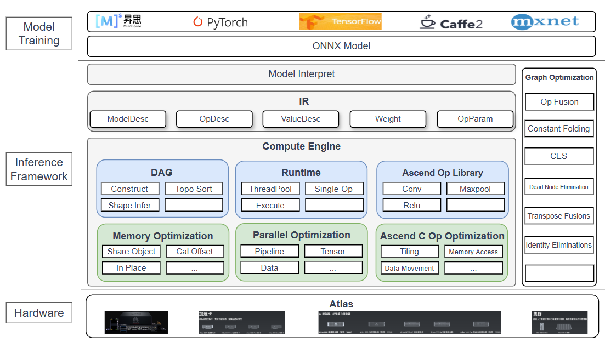
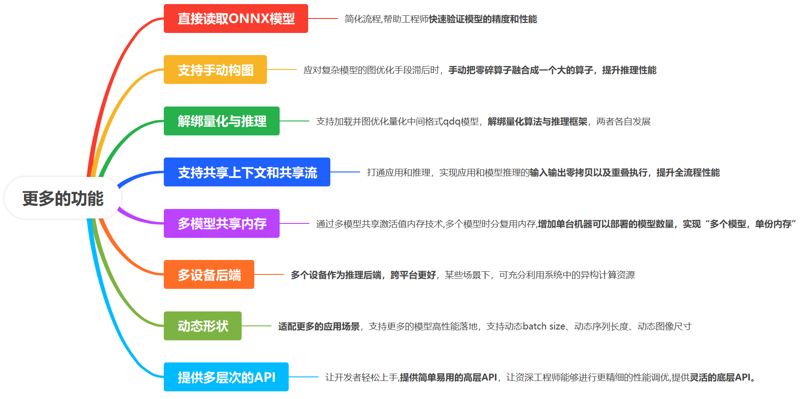

English | Simplified Chinese
最新动态¶
Introduction¶
框架内部开发的推理子模块，作为缺省推理框架，当用户环境未编译链接其他推理框架时可使用此框架，在实际应用场景中，推荐用户使用对应平台下，芯片厂商提供的推理框架。
目前主要支持华为昇腾NPU算子后端和纯CPU算子后端，计划扩展至X86、CUDA、ARM、OpenCL等异构计算平台。
在模型支持方面，已适配主流视觉模型，包括图像分类（ResNet50等）、目标检测（YOLOv11等）和图像分割（RMBG1.4等）。未来将拓展支持大语言模型（LLM）和文本图像多模态模型（Dit等）。
Architecture¶

Why implement an inference framework internally¶
From a model deployment perspective, an inference framework needs to support more functionalities to meet practical application requirements: We summarized the key functionalities an inference framework needs to support:

nndeploy已具备大量推理相关基础组件：nndeploy在模型部署方面有许多优秀特性。nndeploy背后有大量精心设计和开发工作，为用户提供功能强大、易用、高性能且兼容主流框架的模型推理和部署体验。nndeploy已具备大量推理相关基础组件，因此我们选择先基于华为昇腾生态，开发一个内部推理框架。该框架将从部署角度出发，提供全面、易用的功能。
Keeping up with the development of AI infrastructure in the era of large models: Large models demonstrate powerful capabilities across various fields but also impose higher demands on AI infrastructure, such as more efficient memory management, stronger distributed inference capabilities, deeper operator optimization, etc. Developing this internal inference framework will enable us to keep pace with the steps of the large model era.
提供一个缺省的推理框架：nndeploy内部推理框架将作为nndeploy的缺省推理框架，当用户没有编译链接推理框架时，可以使用该缺省推理框架，在实际应用场景下，推荐用户使用对应平台芯片公司提供的推理框架。
Features¶
1. 功能丰富¶
Support manual graph construction: When graph optimization methods lag, manually combining fragmented operators into a large operator through manual graph construction can improve inference performance.
Support loading and optimizing quantized intermediate format QDQ models: The inference framework can support loading and optimizing QDQ models, where model quantization can be completed at the training framework or ONNX level, and the inference framework is responsible for loading the quantized intermediate format QDQ models, completing subsequent model graph optimization work. This can decouple quantization from the inference framework.
Support shared context and shared streams: Breaking through the application and inference, achieving zero-copy of inputs and outputs between application and model inference as well as overlapping execution, enhancing the performance of the entire process.
Support dynamic shape input: Adapt to more application scenarios, support more models’ high-performance deployment, support dynamic batch size, dynamic sequence length, dynamic image size.
Support multi-device backend operators: Currently, the backend operators support CPU and Huawei Ascend NPU, with future plans to gradually expand support for CUDA, ARM, OpenCL, and other heterogeneous computing platforms.
2. 简单易用¶
Support direct reading of ONNX models: Simplify the process, helping engineers quickly verify the model’s accuracy and performance.
Support direct reading of safetensors format model weight files: Simplify the process, helping engineers quickly verify the model’s accuracy and performance.
Provide multi-level APIs: Allow developers to get started easily, providing simple and easy-to-use high-level APIs, enabling experienced engineers to perform more detailed performance tuning, offering flexible low-level APIs.
3. 高性能¶
Memory reuse: High-efficiency memory reuse management mechanism based on computational graphs.
Multi-model inference instances share memory: Through multi-model shared activation value memory technology, multiple models share memory at different times, increasing the number of models that can be deployed on a single machine, achieving “multiple models, single memory copy”.
Graph optimization: Through a series of optimizations on IR/computational graphs, such as operator fusion, constant folding, elimination of common subexpressions, etc., to improve model inference performance.
Operator optimization: For different hardware platforms, such as CPU, Huawei Ascend NPU, etc., deeply optimize operators, fully utilizing hardware characteristics to achieve high-efficiency computation.
Key submodules¶
Model Intermediate Representation (IR): A set of carefully designed data structures used to describe the structure and weight information of a model. It is the core data structure connecting model interpretation, graph optimization, computational graph construction, and other key submodules of the inference framework. As the unified model representation inside the inference framework, IR simplifies the framework design while facilitating interaction between modules.
Model Interpreter: A module that converts training framework model files into custom model files for the inference framework. Currently, it supports converting onnx model files into custom model files (model structure file JSON, model weight file safetensors), and also supports mutual conversion between custom model files and custom IR. Through the model interpreter module, different format models can achieve unified representation inside the inference framework, simplifying the design of the inference framework.
Computational Graph (DAG): A directed acyclic graph with execution attributes composed of operators and tensors, constructed through IR and configuration parameters.
Runtime: Responsible for executing the computational graph, supporting two modes: model inference and single operator execution. Based on the directed acyclic graph with execution attributes, it allocates required resources for the computational graph, writes inputs, executes the computational graph, and finally obtains the inference results.
Ascend Operator Library: A rich operator library based on the Huawei Ascend platform, including various types of high-performance operators such as NN, BLAS, AIPP, DVPP. Operators are closely related to the computational graph, forming the core component of the inference framework.
Graph Optimization: Optimizes IR or computational graphs at various stages of model inference to improve model inference performance. It includes multiple optimization techniques such as operator fusion, constant folding, elimination of common subexpressions, transpose elimination, identity elimination, and combines hardware characteristics and specific model features to select appropriate optimization strategies.
Memory Optimization: By analyzing the lifecycle of Tensors in the computation graph, Tensors with non-overlapping lifecycles are reused in memory to reduce memory usage.
Parallel Optimization: Enhances model inference performance by leveraging hardware resources’ parallel capabilities, including data parallelism, pipeline parallelism, tensor parallelism, and other parallel models.
Ascend C Operator Development: A custom operator development language based on Huawei’s Ascend platform, allowing users to customize and optimize operator implementations according to actual needs.